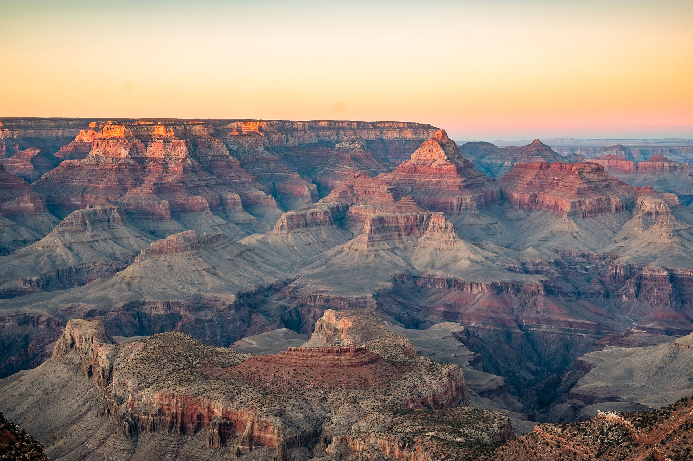

The Grand Canyon is perhaps the world’s greatest natural wonder. It offers an innumerable variety of sensations from the sublime vistas at the canyon rim to the subtle charm of the tiny creeks and streams which nourish the backcountry traveler. From the raging rapids of the mighty Colorado River to the stark desert beauty of the Tonto plateau. From 3000 foot cliffs to spring wildflowers. Bighorn sheep. Ancient artifacts. The oldest rocks (the Vishnu Schist). The shortest river (Thunder River). Stunning waterfalls.
However it is not easy to fully experience this canyon. From the huge tourist crowds on the rim, the endless reservation requirements, and the physical strain of visiting the inner canyon, one must make a serious effort.
A view from the canyon’s South Rim facing west. The Colorado River is clearly visible in its channel. Note that the channel is actually the “Inner Canyon” which is over 1,000 feet deep in itself! This photo was probably taken near the top of the Hermit Trail. The large side canyon entering from the left is Hermit Creek Canyon, one of the more popular (and relatively easy) access routes to the bottom of the canyon.
Twenty five miles east of Grand Canyon Village on the South Rim, the Watchtower overlooks the canyon and adjacent Painted Desert at Desert View. You may still climb to the viewing windows at the top of this historic structure.The vistas from Desert View are more open and desert-like. It’s easier to see the flowing river here. Also, the Tusayan Indian Ruins and Museum are just down the road.
 Back to Course Home Page